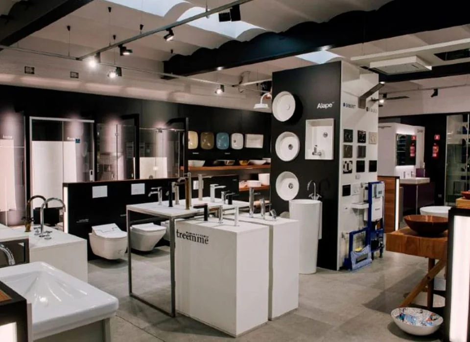
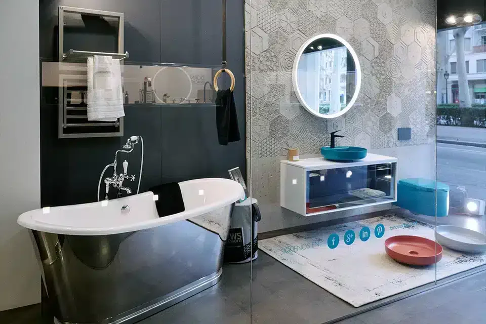
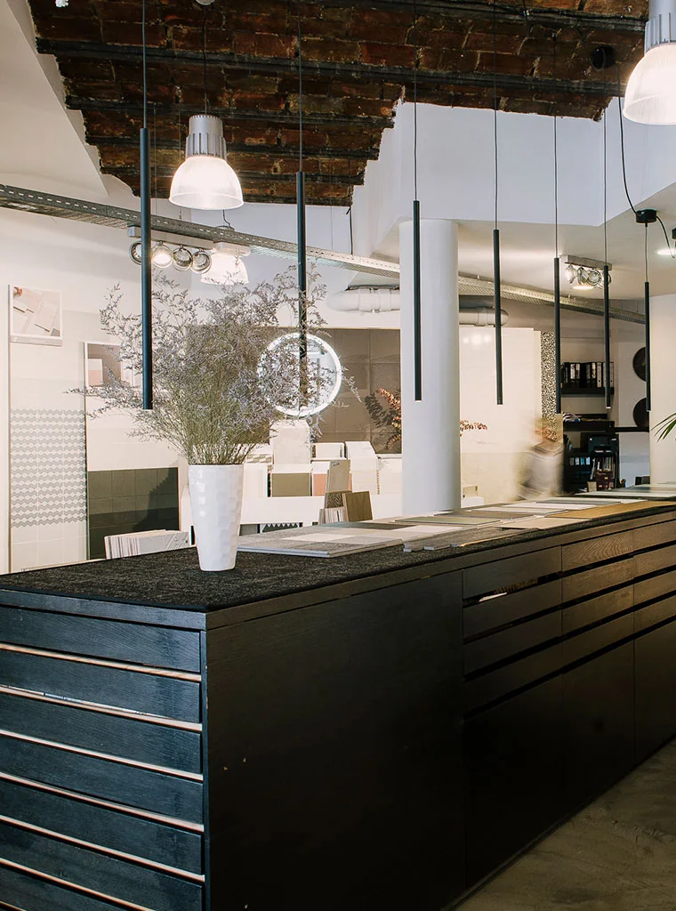

Dos showrooms, tres minutos.
Baños en Gran Via 494. Pavimentos y revestimientos en Viladomat 118. Ambos en el Eixample, a pie el uno del otro, de lunes a viernes.
Gran Via de les Corts Catalanes, 494
600 m² diáfanos en el centro de la ciudad, una de las mayores tiendas de baño de Barcelona: muebles, lavabos, bañeras, griferías, mamparas, platos de ducha, sanitarios, espejos, radiadores, accesorios y accesibilidad.
Dornbracht, Duravit, Catalano, Kaldewei, Inbani, Bathco, Artelinea, Cerámica Cielo, Villeroy & Boch, Rexa, Zucchetti, Hansgrohe, Madero Atelier, Unibaño, Novellini, Hidrobox, Lasser, Iakus, Hewi, Cosmic, Effe y Geberit.
Un outlet de baño con descuentos en primeras marcas, recambios, y un equipo de asesores que te acompaña de principio a fin.
La entrada, en Gran Via 494, entre Viladomat y Calàbria. Pide cita y te esperamos con lo que quieras ver preparado.




Tres minutos a pie entre los dos.
Gran Via de les Corts Catalanes, 494
Viladomat, 118
Un solo equipo para los dos showrooms. Si vienes con un cliente, dinos por cuál empezar y te acompaña la misma persona.
Viladomat, 118
Más de 200 m² de pavimentos y revestimientos: porcelánicos, cerámicos, piedras naturales, hidráulicos, mosaicos, terracotas, parqués, sintéticos, gran formato y exteriores.
Mutina, Imola, Floor Gres, Florim, Revigres, Cevica, Cerim, Aparici, Martí, Sicis, Floover, Dekton, Neolith, Silestone y Granorte.
Aquí están Bagno Ceramiche, el espacio reservable para arquitectos e interioristas, y la Bagnoteca, la biblioteca de catálogos de todas las firmas.


Pide cita y te lo preparamos.
Dinos qué proyecto tienes entre manos y qué quieres ver. Si vienes con tu cliente, te reservamos Bagno Ceramiche.